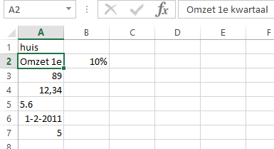

Taak: Invoer gegevens
Een eenvoudige oefening in het invoeren van gegevens in een cel.
- Selecteer cel A1.
-
Typ in huis en druk op
Enter.
Het woord huis staat links uitgelijnd in de cel en de celwijzer heeft zich 1 cel naar beneden verplaatst zodat nu cel A2 de actieve cel is.
-
Typ i n Omzet 1e kwartaal en druk op
Enter.
De tekst staat links uitgelijnd in de cel, past niet binnen de celgrenzen en lijkt daardoor ook deels in B2 te staan (wat niet waar is). Dat de tekst lijkt door te lopen naar cel B2 komt omdat cel B2 leeg is. De actieve cel is nu A3 geworden.
-
Typ in 89 en druk op Enter.
Het getal staat rechtsuitgelijnd in de cel. De actieve cel is A4 geworden.
-
Typ in 12,34 en druk op
Enter.
Het getal staat rechtsuitgelijnd in de cel. De actieve cel is A5 geworden.
-
Typ in 5.6 en druk op
Enter.
De celinhoud is links uitgelijnd. Dit komt vanwege de punt tussen 5 en 6. Hierdoor interpreteert Excel de invoer als tekst en wordt daarom links uitgelijnd. De actieve cel is nu A6.
-
Typ in 1-2-2011 en druk op
Enter.
De datum staat rechts uitgelijnd in de cel. Dat komt omdat Excel datums als getallen interpreteert, ze ook zo behandelt, maar ze een speciale datumopmaak geeft. De actieve cel is nu A7.
-
Typ in =2+3 en druk op
Enter.
In de cel zie je nu het getal 5 staan. Dat komt omdat Excel alle invoer die met = begint als een formule opvat, daarvan de uitkomst berekend en dan het resultaat laat zien. De actieve cel is nu A8.Waarschuwing: De inhoud van de cel blijft steeds de formule en niet het resultaat.
-
Selecteer cel B2, typ in 10% en
druk op Enter.
In cel B2 verschijnt de inhoud rechts uitgelijnd. Dat komt omdat Excel door het procentteken de invoer heeft geïnterpreteerd als een getal. De werkelijke inhoud van de cel is dan ook 0,1 en deze inhoud wordt in de procentweergave getoond. En omdat cel B2 nu niet meer leeg is, wordt de tekst cel A2 niet meer volledig getoond.
-
Selecteer cel A2.
In de formulebalk is te zien dat de inhoud van de cel nog steeds uit de volledig ingevoerde tekst bestaat.
Figuur 1. Voorbeeld invoer gegevens Opmerking: Het is mogelijk om de breedte van de kolom aan te passen zodat alle tekst in cel A2 getoond wordt.
In deze invoeroefening heb je het volgende geleerd:
- Tekst wordt standaard links uitgelijnd.
- Getallen worden standaard rechts uitgelijnd.
- Er is een belangrijk verschil tussen komma's en punten in getallen.
- Formules beginnen altijd met het = teken.
- De invoer van een datum wordt behandeld als een getal en opgemaakt als een datum.
- De invoer van een getal met een procentteken wordt behandeld als een getal en opgemaakt als een percentage. De echte inhoud van de cel wordt het honderdste deel van het ingevoerde getal.
- Een cel heeft een inhoud en een opmaak. En wat je ziet is niet alijd de werkelijke inhoud.